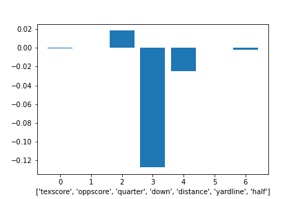

Methodology
Can a machine predict what the opposing team is going to call? Certainly! The University of Texas Play Caller's goal is to predict what the opposing team would call in a given game time situation, then recommend the type of defense to call for the University of Texas. See below exactly how we were able to gather, clean, train and execute our machine learning model.
Development
We obtained college football (CFB) data from ESPN's API to create a database of over 9,000 plays from the University of Texas, encompassing four years.
Data pre-processing
Before diving into our machine learning processes, we analyzed the data set in the following ways.
- Imported the CFB data
- Listed out dependencies
- Narrowed down the data to one team (UT) and the number of years to analyze (4 years)
- Identified a possible primary key that consisted of the gameID together with the drive number and play number
- Compiled and transformed data into key features, dropping unnecessary identifiers
- Concluded that the best option to optimize our probability to follow a standard normal distribution was to bin the quarter time by a half
Building Database
The first step in processing our data was to clean it and find a way to host it in a cloud platform, due to the magnitude. Tools used:
- Heroku PostgreSQL Database
- pgAdmin4
- SQLAlchemy
Detailed below is our final ERD:
A snapshot of the combined data set:
Building our Dashboard
The dashboard created allows for an easy, user-generated input options, according to
the most predicting factors that we identified during our data analysis phase.
Take better look at the probability chart below to see how we identified our factors!
Tools used:
- HTML
- Bootstrap
- CSS
- Heroku
- JavaScript
Machine Learning
Due to its computationally, we chose to use a random forest (RF) machine learning model for the predictor.
While we’re currently looking at a relatively smaller dataset,
we have the ability to expand it without worrying about the model’s accuracy changing.
Additionally, RF models aren’t as prone to overfitting as other choices,
meaning this model could likely be extended outside of our limited scope.
Tools used:
- Python
- Sklearn
- Pandas
- Pickle serialization (save/load)
- VSCode
Preprocessing
- Transformed related columns to be specific to their relation to Texas, aligning with the stated goal of prediction plays of Texas’ opponents.
- Plays that did not result in a Rush or Pass (i.e. penalties, timeouts, etc.) were removed.
- Dropped N/A values along with one duplicate discovered
- Converted ‘clock’ from HH MM SS datetime format to an integer of total seconds, allowing us to bin the results or treat as a continuous value.
- Used ‘quarter’ value to create ‘half’ feature.
- Converts all outcomes of Pass/Rush (i.e. incomplete pass, passing touchdown, rushing touchdown, etc.) to Pass or Rush.
- Continuous features (‘yards’, ‘down’) were standardized using the StandardScaler method from sklearn.
- Categorical and Object datatyped features were encoded using the OneHotEncoder method from sklearn.
- Feature ‘texscore’ & ‘oppscore’ (used) - in conjunction, these two features help determine if a team needs to score quickly, leading to more passing, or whether they want to ‘run out the clock,' leading to more run plays.
- Feature ‘clock’ transformed into ‘time_remaining_in_half” (used) - This allows us to both bin easily and treat it as a continuous feature should it be more beneficial to the model. It also reflects the fact that strategies change as teams get closer to the end of the half and not so much at the end of the quarter.
- Feature ‘quarter’ and ‘half’ (used) - As the game gets later, strategies will change, and that seems to be reflected in the feature analysis below.
- Feature ‘down’ and ‘distance’ (used) - A primary contributor (something that’s highlighted as well by the feature analysis below). It’s also likely the main contributor to a naive, non-ML derived decision of rush/pass.
- Feature ‘yardline’ (used) - As field position changes, the playbook opens up and alters strategy.
- Feature ‘week’ (dropped) - While an individual team’s strategy may change week over week as personal, practice time, and coaching philosophies change, that’s not something that will stay consistent across teams or years and the inclusion could result in overfitting.
- Feature ‘year’ (dropped) - Similar to the reasoning behind ‘week’ being dropped. Additionally, in preliminary feature analysis, year wasn’t a huge driver of change.

CART Classification Feature Importance
A little bit of a different story here with the ‘quarter’, ‘down’, and ‘distance’ being featured less importantly in the model.
With the growth of the other features, however, it could be an indication that they’re worth keeping in the model.

RF Classifier Feature Importance
This is where we started to see some consistency with feature importance.
First, it was notable that a majority of the features chosen were having an impact.
The ‘half’ feature may warrant a second look given it’s low score compared to the others.
RF Regression Feature Importance
The RF regression test was very consistent with the analysis above.
The change of note is the increase in ‘quarter’, ‘down’, and to a smaller extent ‘distance.’
Train, Test Split
Using the train_test_split method from sklearn, the data was split to allow for **75%** to be used for
training, and **25%** to be used to test accuracy, precision and recall for the model. There was no need
to stratify as the output variables are near 50/50 splits.
Random Forest: Iterations
- 1st - Random Forest, Binned time, non-binned “distance”, kept “week”: Accuracy score: 0.6272
- 2nd - Random Forest, Binned time, non-binned “distance”, dropped “week”: Accuracy score: 0.6368
- 3rd - Random Forest, Binned time, non-binned “distance”, dropped “week”, dropped “year”: Accuracy score: 0.6368
- Reverted back to ‘2nd’ RF model.
Random Forest: Limitation
Though our testing and data analysis demonstrated that RF was the optimal machine learning model for our Defensive Call Player ,
there are a few limitations that still exist. First, while there are options available for feature analysis when preparing the data,
once the model is making its decisions, it’s tough to tell what actions it’s taking.
The best way to counteract that is to have good data in. Additionally, RF models aren’t as prone to overfitting as other choices,
meaning this model could likely be extended outside of our limited scope.